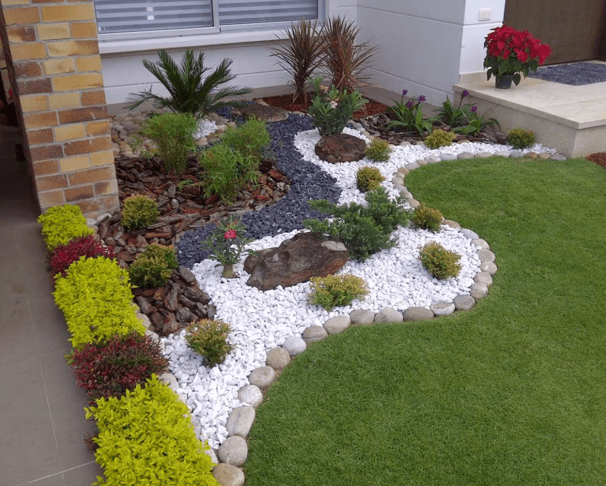
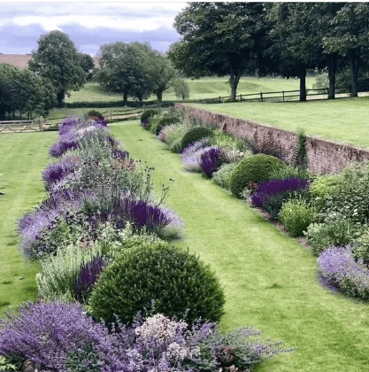
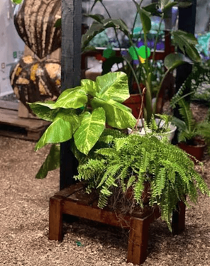

Tener un jardín bonito no significa necesariamente dedicarle muchas horas. Con una buena planificación es posible crear un espacio verde atractivo, agradable y fácil de cuidar durante todo el año.
La clave está en elegir correctamente el lugar, seleccionar plantas adaptadas a las condiciones del espacio y organizar el riego y el mantenimiento desde el principio. Un jardín de bajo mantenimiento no es un jardín sin cuidados: es un jardín diseñado para necesitar menos trabajo
Antes de comprar plantas, conviene observar durante algunos días cómo se comporta el espacio. La cantidad de horas de sol, la circulación del agua y la calidad del suelo determinarán qué especies podrán crecer con mayor facilidad.
También es importante considerar el tamaño disponible. En un jardín pequeño, agrupar las plantas y dejar zonas despejadas puede facilitar considerablemente las tareas de limpieza y riego.
Algunos aspectos que conviene analizar son:
Una de las mejores estrategias para reducir el mantenimiento es elegir plantas que se adapten naturalmente al clima y a las condiciones del jardín. Una especie que necesita demasiada agua, sombra o cuidados especiales requerirá más trabajo para mantenerse saludable
También conviene evitar llenar el espacio con demasiadas variedades diferentes. Repetir algunas especies crea un jardín visualmente más ordenado y simplifica el riego, la poda y el control de plagas.
Las zonas que reciben varias horas de sol directo pueden aprovecharse con especies resistentes y acostumbradas a condiciones luminosas.
Algunas opciones son:

Las áreas con poca luz también pueden convertirse en espacios verdes atractivos. En estos sectores es preferible elegir plantas que toleren la sombra o la semisombra en lugar de intentar adaptar especies que necesitan sol directo.
Algunas alternativas son:

La sombra no significa necesariamente ausencia de luz: muchas plantas crecen perfectamente con iluminación indirecta o algunas horas de sol suave
Una rutina organizada permite mantener el jardín en buenas condiciones sin convertir la jardinería en una tarea agotadora.
El objetivo de un jardín de bajo mantenimiento no es eliminar por completo las tareas de jardinería, sino conseguir que el tiempo dedicado al cuidado sea razonable. Una buena selección de plantas y una distribución práctica permiten dedicar menos tiempo al trabajo y más tiempo a disfrutar del espacio.
Un jardín sencillo, saludable y bien planificado puede convertirse en uno de los rincones más agradables de una casa, incluso cuando no se dispone de mucho tiempo para cuidarlo.
Guía práctica de jardinería sostenible — Instituto Argentino de Horticultura, 2025.
Manual de plantas resistentes y de bajo mantenimiento — Revista Jardín & Naturaleza, Nº 48, 2024.
Diseño de jardines domésticos — Centro de Estudios de Paisajismo y Jardinería, Buenos Aires, 2025.